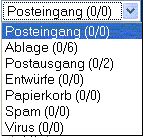

Ordner sind ein hervorragender Weg, um seine Nachrichten zu
organisieren. Es gibt 7 Hauptordner und eine variable Anzahl an
Benutzerordnern. Die 7 Hauptordner sind:
|
 |
- Posteingang
- Ablage
- Postausgang
- Entwürfe
- Papierkorb
- Spam
- Virus
|
Der Eingang ist ebenfalls eine Mailbox. Hier befinden sich alle
eingegangenen Nachrichten (es sei denn es wurde vom Benutzer anders
eingestellt. siehe
Setzen eines Filters für
nähere Informationen.). Sie können die Nachricht löschen, oder aber in
einen von Ihnen angelegten Ordner verschieben. Sie können die Nachricht
auch in den Papierkorb verschieben. Wollen Sie dies machen, gibt es
zwei Wege:
Sie können die Checkbox (
 ) auswählen bei allen Nachrichten, die verschoben werden sollen und anschliessend den Papierkorbbutton ( ) auswählen bei allen Nachrichten, die verschoben werden sollen und anschliessend den Papierkorbbutton (
 ) klicken. Klicken Sie nun "OK", wenn eine Bestätigung verlangt wird.
Die zweite Möglichkeit ist ebenfalls die Checkbox der Mails
auszuwählen, die verschoben werden sollen, danach den Ordner über den
Mails auswählen, in den verschoben werden soll, und dann den Button
"Verschieben" klicken. Danach wieder mit "OK" bestätigen. Oder Sie
wollen die Nachricht permanent löschen, dann wählen Sie--LÖSCHEN-- in dem Dropdownmenü. Die Nachricht wird umgehend gelöscht.
) klicken. Klicken Sie nun "OK", wenn eine Bestätigung verlangt wird.
Die zweite Möglichkeit ist ebenfalls die Checkbox der Mails
auszuwählen, die verschoben werden sollen, danach den Ordner über den
Mails auswählen, in den verschoben werden soll, und dann den Button
"Verschieben" klicken. Danach wieder mit "OK" bestätigen. Oder Sie
wollen die Nachricht permanent löschen, dann wählen Sie--LÖSCHEN-- in dem Dropdownmenü. Die Nachricht wird umgehend gelöscht.
Benötigen Sie die Nachricht für spätere Benutzung, können Sie auch
Ordner erstellen, um diese Nachrichten entsprechend zu lagern. Bekommen
Sie beispielsweise des öfteren Nachrichten, die Ihre Arbeit betreffen,
möchten Sie möglicherweise einen Ordner namens "Arbeit" erstellen. Um
einen Ordner zu erstellen, folgen Sie bitte dieser Anleitung:
- Wählen Sie den Button Ordner-Einstellungen (
 ) )
- Im Eingabefeld, unter Ordnername, geben Sie nun den Namen des zu erstellenden Ordners ein.
- Klicken Sie nun "Hinzufügen" rechts daneben.
Sie haben nun einen neuen Ordner. Hier können Sie alle betreffenden
Nachrichten speichern, die hier zur späteren Verwendung aufgehoben
werden sollen. Es ist nun auch wesentlich einfacher, die betreffenden
Nachrichten wieder zu finden. Die Sortierung der Nachrichten ist
ebenfalls den eigenen Bedürfnissen anpassbar. Sie können die
Nachrichten in den Ordnern nach Absender, Betreff oder anderen
Kriterien sortieren. Es bleibt Ihnen überlassen, wie Sie ihre
Nachrichten organisieren wollen. Bitte sehen Sie auch verschieben und kopieren von Nachrichten,
um zu lernen, wie Sie Ihre Nachrichten in die von Ihnen angelegten Ordner legen.
Sie können ebenfalls Ihre Ordner in der Ordnerliste bearbeiten. Sind
Sie gerade nicht in den Ordner-Einstellungen, wählen Sie den
entsprechenden Button (
) um dorthin zu wechseln. Hier haben Sie folgende Möglichkeiten:
| Aktion |
Was Sie bewirkt |
| Als gelesen Markieren |
Markiert alle beinhalteten Nachrichten als gelesen |
| Index prüfen |
Überprüft die Anzal der sich in dem Ordner befindlichen Nachrichten |
| Neu indizieren |
Zählt alle Nachrichten nochmals durch |
| Umbenennen |
Benennt den Ordner um |
| Löschen |
Löscht den Ordner |
| |
|
Sie können den Ordner auswählen und alle gespeicherten Nachrichten
ansehen, indem Sie den Namen des Ordners anklicken. Sie können den
Ordner auch auswählen, indem Sie ihn aus dem Klappmenü ganz oben links
anklicken. |